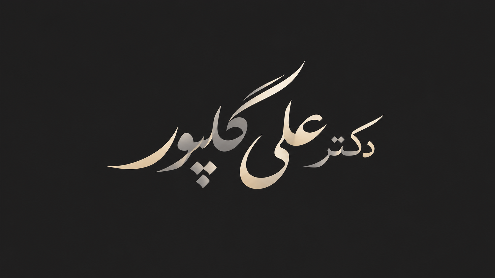
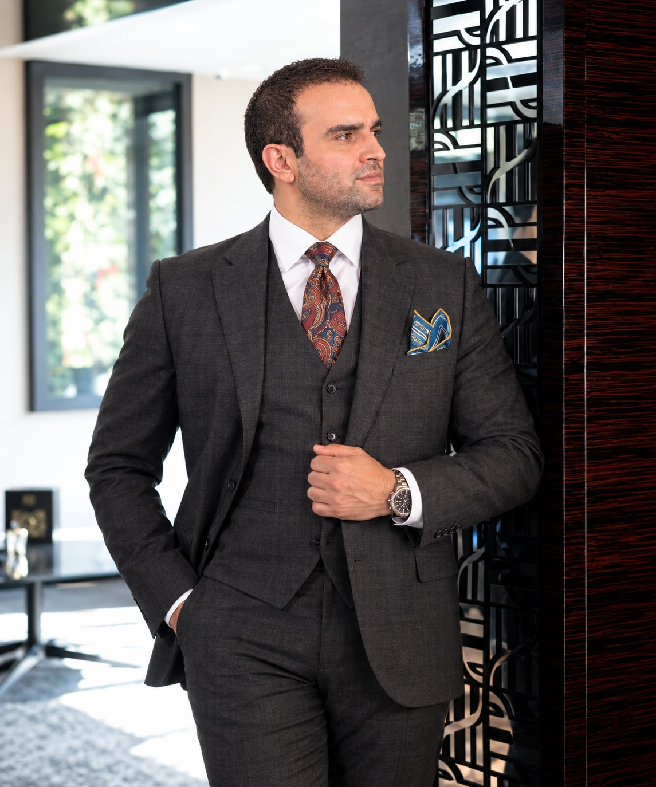
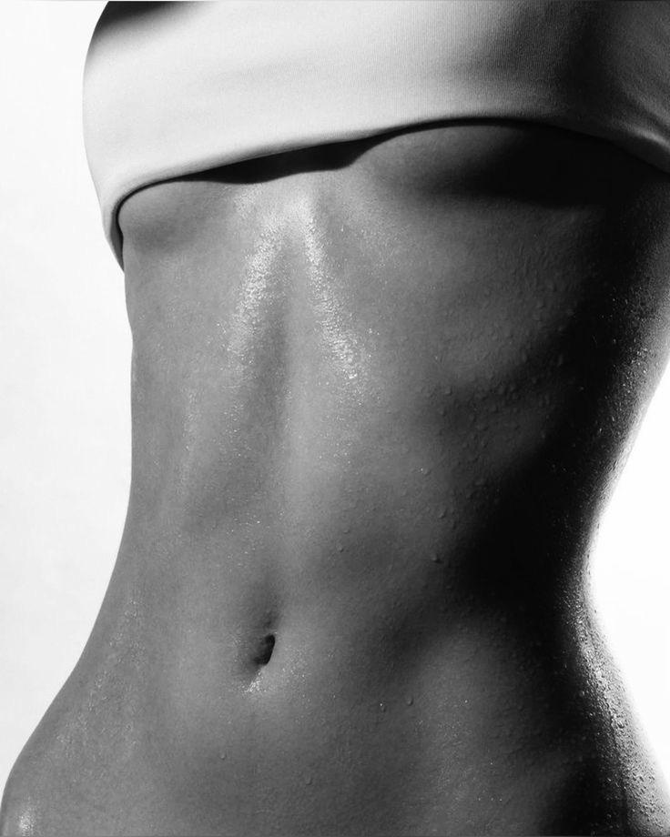
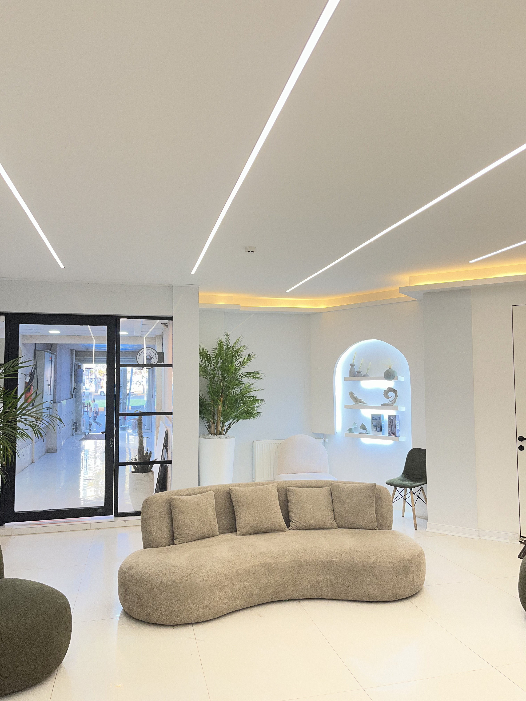

01
.jpg)

دکتر علی گلپور Body SurgeonGOLPOUR / AESTHETIC & SURGERY
کلینیک جراحی و زیبایی گل پور؛ فضایی برای تصمیمگیری آگاهانه، نگاه تخصصی و تجربهای آرام و لوکس.
Dr Majid Aligolpour
General Surgeon | Body Surgeon
دکتر مجید علی گل پور، متخصص جراحی عمومی و جراح حوزه فرم دهی و کانتورینگ بدن، پس از گذراندن دوره پزشکی عمومی در گلستان و تخصصی جراحی عمومی در گیلان، در سال 1400 موفق به اخذ بورد تخصصی جراحی عمومی شد و از سال 1396 به صورت حرفه ای در حوزه جراحی فعالیت می کند. تمرکز اصلی فعالیت او بر لیپوابدومینوپلاستی، لیپوساکشن و کانتورینگ بدن است؛ با رویکردی مبتنی بر شناخت دقیق آناتومی، تناسب اندام و توجه به جزئیات.
در هر جراحی، هدف ایجاد نتیجه ای طبیعی، متناسب و هماهنگ با ویژگی های منحصربفرد هر فرد است.

.jpg)

ترکیبی از لیپوساکشن و ابدومینوپلاستی است؛ بعبارتی در یک جراحی، هم چربی های اضافی نواحی مختلف بدن برداشته می شوند و هم پوست اضافه شکم اصلاح می شود. در این روش، بسته به شرایط بدن،چربی های شکم، پهلوها و اطراف کمر لیپوساکشن می شوند و پوست و بافت اضافی قسمت پایین شکم برداشته می شود. در صورت نیاز، عضلات دیواره شکم نیز بررسی و اطلاح می شوند.
هدف این است که فقط شکم کوچکتر نشود، بلکه شکم، پهلو و کمر در کنار هم فرم متناسب تری پیدا کنند. هر فرد شرایط متفاوتی دارد و تکنیک جراحی براساس میزان چربی، پوست اضافه، فرم بدن و آناتومی او انتخاب می شود
مجموعهای از نمونهکارهای واقعی که مسیر تغییر و دستیابی به فرم متناسبتر را به تصویر میکشند
یک مسیر ساده و شفاف برای کاهش ابهام و ایجاد تجربهای حرفهای.
ثبت اطلاعات اولیه و انتخاب زمان مناسب.
مشاوره و ارزیابی دقیق شرایط و اهداف شما
انجام جراحی با برنامه ریزی و تکنیک مناسب با هر فرد
ارزیابی روند بهبودی و پیگیری نتیجه نهایی

کلینیک جراحی و زیبایی گلپور با تمرکز بر جراحیهای زیبایی و فرمدهی بدن، تلاش میکند تجربهای دقیق، حرفهای و متناسب با ویژگیهای هر فرد ارائه دهد. دکتر مجید علی گلپور، متخصص جراحی عمومی و جراح حوزه فرمدهی و کانتورینگ بدن، با تکیه بر دانش تخصصی، ارزیابی دقیق و انتخاب روش مناسب، مسیر درمان و جراحی را با هدف دستیابی به نتیجهای طبیعی، متناسب و هماهنگ با فرم بدن هر فرد دنبال میکند.
فرم را تکمیل کنید؛ اطلاعات تماس و زمان پیشنهادی بعداً توسط کلینیک مدیریت میشود.
بله. هر مسیر با یک مشاوره تخصصی آغاز میشود؛ جایی که شرایط و اهداف شما بررسی شده و بهترین روش متناسب با ویژگیهای فردیتان انتخاب میشود.
فرم رزرو نوبت را تکمیل کنید تا روند هماهنگی مطابق اطلاعات واقعی مجموعه انجام شود.
ارزیابی و تصمیمگیری باید مطابق شرایط فرد و نظر پزشک انجام شود.